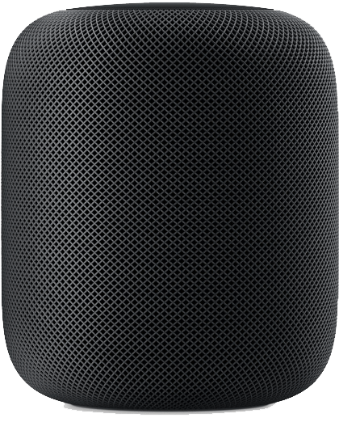
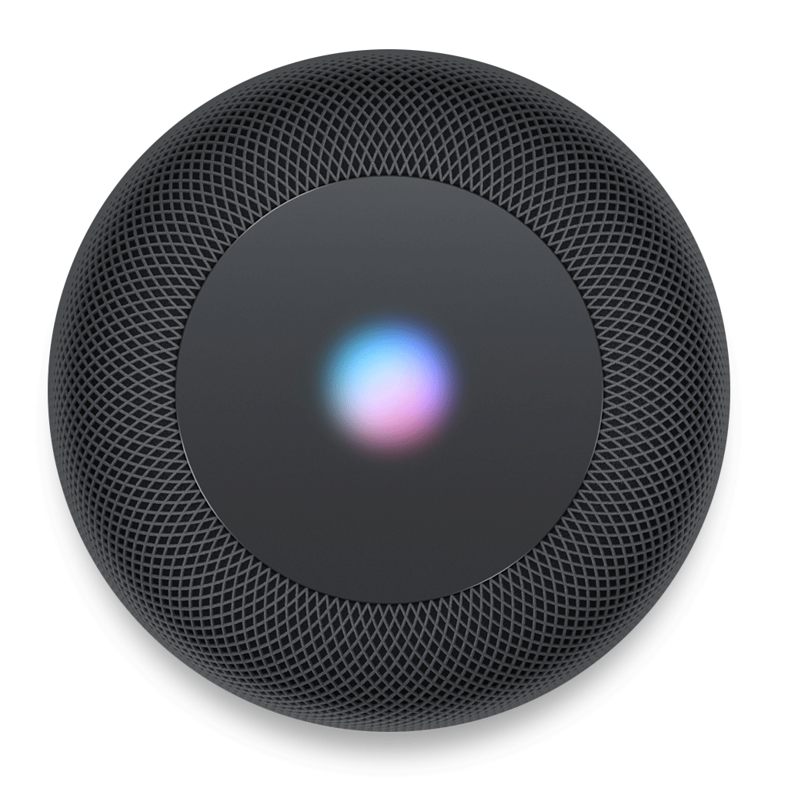
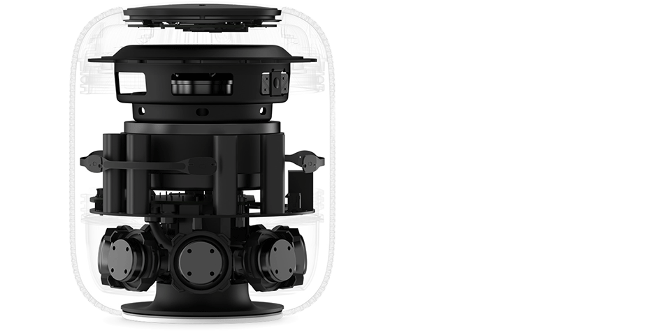
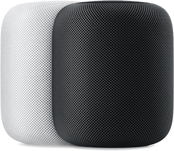

Il y a un nouveau son à la maison.
Avec un son incroyable, une conscience spatiale et une vaste librairie d'Apple Music, HomePod porte l'enceinte à un tout autre niveau.


Un son à la perfection
HomePod est un haut-parleur puissant dont le son est étonnant, s'adapte à l'endroit où il est joué. Avec Apple Music, vous avez un accès instantané à l'un des plus grands catalogues musicaux du monde. Et avec l'intelligence de Siri, vous le contrôlez grâce à une interaction vocale naturelle. 1 HomePod porte l'expérience d'écoute à un tout autre niveau. Et ce n'est que le début.
Des basses profondes qui emplissent l’espace.
Le boomer longue portée conçu par Apple est placé au sommet de l’enceinte, orienté vers le haut, ce qui crée une large gamme de basses profondes qui surpasse celle de n’importe quelle enceinte traditionnelle. Un ensemble de six micros, associé à un micro interne avec égaliseur de basses, analyse et compense l’effet de la pièce sur la réponse dans les graves, afin de produire un son riche et régulier. Un puissant moteur pilote le diaphragme sur 20 mm, un exploit pour une enceinte de cette taille. Ainsi les basses se détachent parfaitement, même à faible volume.
Même de loin, il vous entend très bien.
Grâce à six micros placés en cercle, le HomePod capte le son dans toute la pièce. Lorsque vous dites « Dis Siri », le traitement avancé du signal, associé à l’annulation de l’écho et du bruit, permet au HomePod de vous entendre sans que vous ayez à élever la voix, même si vous êtes à l’autre bout de la pièce et que la musique est forte. Dès que le HomePod reconnaît les mots « Dis Siri », ce que vous dites est chiffré et envoyé de façon anonyme aux serveurs Apple, sans être relié à votre identifiant Apple.

Un son haute fidélité incroyablement enveloppant.
Spécialement conçu pour le HomePod, un ensemble de sept tweeters à faisceaux acoustiques, chacun ayant son propre amplificateur, crée un contrôle directionnel exceptionnel. Dotés d’un design à pavillon replié et placés autour de la base, ils envoient le flux musical vers le centre, puis depuis le bas selon un schéma à 360°, ce qui se traduit par une sensation de l’espace très enveloppante. Cela élimine pratiquement toute réflexion sur des surfaces planes et permet d’offrir un son haute définition parfaitement cohérent.

Jamais une enceinte n’avait eu un tel QI.
Une puce A8 conçue par Apple orchestre toutes les remarquables innovations audio qu’intègre le HomePod. Notamment un traitement avancé du signal qui permet à Siri de vous entendre malgré la musique. Un traitement en temps réel digne d’un studio qui maximise les basses tout en réduisant la distorsion à son minimum. Une mise en mémoire tampon encore plus rapide que le temps réel. Et l’upmixing du son direct et du son ambiant. Résultat ? Un son exceptionnel, à chaque écoute.
Jamais une enceinte n’avait eu un tel QI.
Le HomePod s’habille d’un tissu mesh d’un seul tenant, pour une esthétique et des performances acoustiques optimales. Disponible en blanc et en gris sidéral, c’est un plaisir à regarder — et à écouter — où que vous soyez dans la pièce.
Il comprend l’espace. Automatiquement.
Du sol au plafond et d’un mur à l’autre, un son harmonieux dans toute la pièce.
Placez le HomePod n’importe où dans la pièce. Avec la perception spatiale, il analyse l’acoustique, règle le son en fonction de sa propre position et sépare la musique en deux catégories : son direct et son ambiant. Le tout, de façon automatique. Le son direct, y compris les voix et instruments principaux, est dirigé vers le centre de la pièce, tandis que le son ambiant est diffusé dans les canaux gauche et droit, et renvoyé par le mur. Ainsi, l’espace tout entier se remplit de sonorités riches,parfaitement définies.
Duo stéréo.Votre son prend une nouvelle dimension.
Une fois appairés, deux HomePod fonctionnent de concert pour créer instantanément une scène sonore plus large, plus immersive qu’un système stéréo traditionnel. Chaque HomePod détecte automatiquement son emplacement dans la pièce et règle précisément la musique en accord avec l’autre, dès le premier morceau joué. Non seulement une paire stéréo de HomePod crée un son qui emplit davantage la pièce, mais elle fournit une excellente extension dans les graves, avec une reproduction plus profonde et plus précise des basses fréquences.
AirPlay 2. Jouez votre musique dans toute la maison, depuis une même pièce.
Lorsque vous placez des HomePod dans plusieurs pièces, les enceintes communiquent entre elles via AirPlay. Vous pouvez donc demander à Siri de jouer du jazz dans le salon et la bande originale de Vaiana dans la chambre des enfants, ou de diffuser le même morceau dans toute la maison, de là où vous êtes à cet instant. Votre musique peut également vous suivre à mesure que vous évoluez dans la maison : il suffit de demander à Siri de déplacer le morceau d’un HomePod à l’autre.

Le HomePod abrite un assistant très intelligent.
Que vous souhaitiez connaître l’état de la circulation, les dernières actualités, les résultats sportifs ou tout simplement vous programmer des rappels divers, Siri est là pour vous prêter main‑forte. Vous pouvez également programmer, annuler et vérifier vos rendez‑vous inscrits dans Calendrier. Fini, les retards et autres occasions manquées.